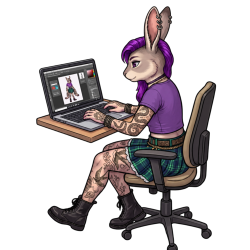

01
Scope
Scope a bounded deliverable
A fixed price or milestones, agreed up front.
Freelance · Eugene, Oregon · Remote
Source-verified research, grant and nonprofit support, and AI-assisted tools. The version that survives an audit.
About

University of Oregon Duck · Class of 2027
I'm a freelance researcher based in Eugene, Oregon, working remotely, and self-employed since Sep 2025.
I study Archaeological Anthropology at the University of Oregon (B.A. expected 2027), and hold associate degrees in Environmental Studies and General Studies from Portland Community College (2025).
I founded Deconstructing Academia, and Handshake AI Skills Studio named me a Top Builder in November 2026.
Services
Official government registries and recorded records: Secretary of State filings, county recorder and clerk, permits.
Can a stressed user find help, eligibility and the next step?
One-page audits with concrete fixes.
Product requirements, user flows, prototyping and testing with AI coding tools.
Next.js, React, TypeScript, Supabase, Python, Playwright; Notion, Gemini, NotebookLM, Floot.
Research turned into accessible public writing, Canva graphics and short-form video.
How I work
01
Scope
A fixed price or milestones, agreed up front.
02
Source
The original record, not someone's summary of it.
03
Cite
If it can't be traced, you'll know.
04
Deliver
With a QA note on what couldn't be verified.
Selected work
A handwriting-to-Markdown tool: photos of notes become structured headings, to-dos and tables for Obsidian and Notion.
Reviews syllabi against published university policies and grounds every finding in exact quotes, with Investigator/Skeptic review.
Meta Global AI Developer Hackathon, Nov 2026
A usability audit sample with concrete recommendations.
Founder, writer and publisher: website, newsletter, digital products and Instagram content translating research for students.
Tools & skills
Contact
Find me on Upwork as Lori James, or reach out directly.